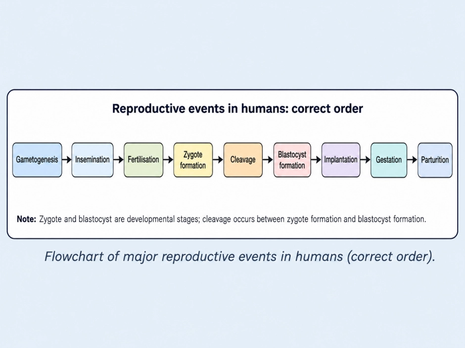
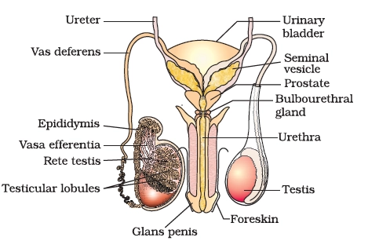
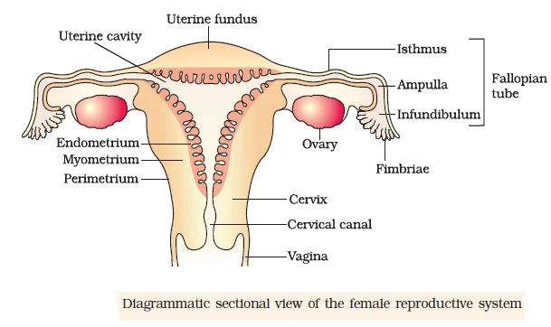
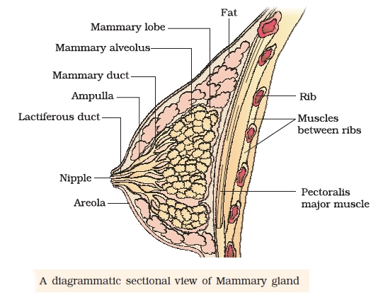
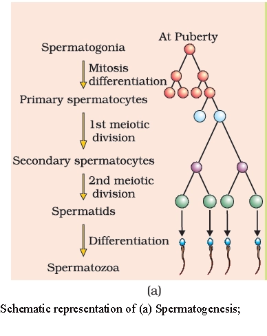
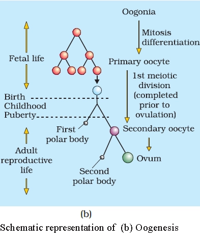
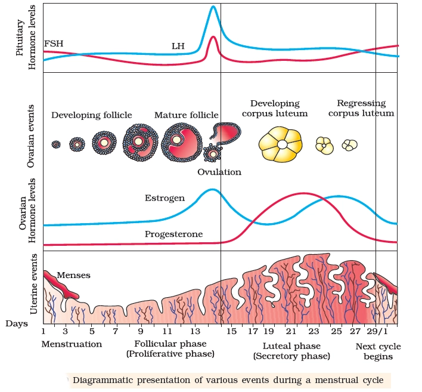
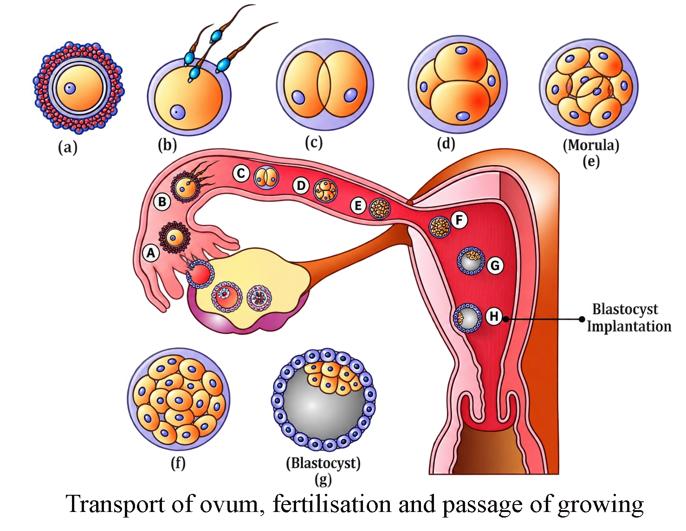
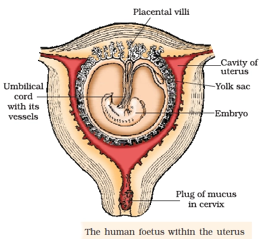
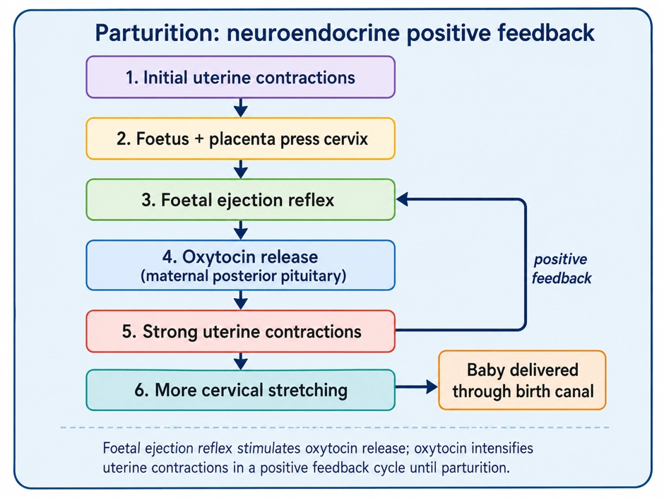

NEET · Biology
Human Reproduction
From gamete formation to birth: the ordered sequence in humans
REPRODUCTIVE EVENTS OVERVIEW
📖Definition & Introduction
- Human sexual reproduction is the formation and fusion of male and female gametes, followed by development inside the mother (viviparity).
- Major events occur after puberty and must be written in correct order in exams.
- Key terms to define: insemination, fertilisation, implantation, gestation, parturition.
- Male gamete formation continues even in old age; female ovum formation ceases around ~50 years (menopause).
- Successful pregnancy requires correct timing and transport of gametes to the site of fertilisation.
🖼️Diagram

🎯Key Concepts
- 🧬Sequence: gametogenesis → insemination → fertilisation → zygote → blastocyst → implantation → gestation → parturition
- 📍Site of fertilisation: ampullary region of fallopian tube
- 🧱Implantation: blastocyst embeds in endometrium (uterine lining)
- 🧫Cleavage: rapid mitotic divisions; cells formed are blastomeres
- 🧠Trophoblast attaches to endometrium; inner cell mass forms embryo
- ♂️Sex is decided at fertilisation by X- or Y-bearing sperm (father determines sex)
🔎SEQUENCE + DEFINITIONS (EXAM WORDING)
- Gametogenesis: formation of gametes in primary sex organs (testis → sperms; ovaries → ovum).
- Insemination: release of semen by penis into vagina during coitus.
- Fertilisation: fusion of sperm and ovum; occurs in ampullary region of fallopian tube.
- Implantation: embedding of blastocyst into endometrium.
- Gestation: embryonic/foetal development in uterus (human pregnancy ≈ 9 months).
⚙️FERTILISATION → BLASTOCYST → IMPLANTATION (HIGH-YIELD LINKS)
- After insemination, sperms move: vagina → cervix → uterus → ampullary region of oviduct.
- Fertilisation needs simultaneous transport of sperms and ovum to ampullary region (reason all copulations do not lead to pregnancy).
- Sperm contact with zona pellucida triggers a membrane change that blocks polyspermy (entry of additional sperms).
- Sperm entry induces completion of meiosis II in secondary oocyte → second polar body + haploid ovum; nuclei fuse → diploid zygote (2n=46).
- Cleavage during oviduct transport forms blastomeres; morula = 8–16 blastomeres; then blastocyst forms in uterus.
💡 Memory Technique
“GI-FZBI-GP (Order cue)”
Organs + ducts + glands that produce, store, transport sperms and form semen
MALE REPRODUCTIVE SYSTEM
📖Definition & Introduction
- Male reproductive system consists of testes, accessory ducts, accessory glands and penis.
- Testes are primary male gonads: produce sperms and secrete androgens.
- Scrotum keeps testes at 2–2.5°C lower than body temperature for spermatogenesis.
- Accessory ducts store and transport sperms to outside via urethra.
- Accessory glands add secretions to form seminal plasma; semen = sperms + seminal plasma.
🖼️Diagram

🎯Key Concepts
- 🌡️Scrotal cooling (2–2.5°C lower) is essential for normal spermatogenesis.
- 🧩Each testis has ~250 testicular lobules; each lobule has 1–3 seminiferous tubules.
- 🏭Seminiferous tubules are the site of sperm production (germ cells + Sertoli support).
- 🧫Leydig cells lie in interstitial spaces (outside tubules) and secrete androgens.
- 🛣️Sperm pathway: Seminiferous → Rete testis → Vasa efferentia → Epididymis → Vas deferens → Ejaculatory duct → Urethra.
- 💧Seminal plasma is rich in fructose, Ca²⁺ and enzymes; supports sperm motility/activity.
🔎TESTIS & SCROTUM: STRUCTURE + CELLS
- Adult testis: oval; length ~4–5 cm, width ~2–3 cm; covered by dense covering.
- Each testis has ~250 testicular lobules; each lobule contains 1–3 coiled seminiferous tubules.
- Spermatogonia (germ cells) in tubule lining ultimately form sperms via meiotic divisions.
- Sertoli cells in tubule lining provide nutrition and support to developing germ cells.
- Leydig (interstitial) cells lie in interstitial spaces; secrete androgens.
⚙️DUCTS, PENIS & ACCESSORY GLANDS (SEMINAL PLASMA)
- Accessory ducts: rete testis, vasa efferentia, epididymis, vas deferens.
- Epididymis lies along posterior surface of each testis; key site for sperm storage and transport onward.
- Vas deferens ascends to abdomen and loops over urinary bladder; joins seminal vesicle duct → ejaculatory duct.
- Urethra starts at urinary bladder, passes through penis, opens at urethral meatus.
- Penis is external genitalia; erectile tissue enables erection for insemination; glans + foreskin.
⚖️CELL TYPES: WHO IS WHERE & WHAT THEY DO?
| Basis | Sertoli cells | Leydig cells |
|---|---|---|
| Location | Inside seminiferous tubules (lining) | Interstitial spaces (outside tubules) |
| Main role | Nourish/support germ cells; aid spermiogenesis | Secrete androgens (testicular hormones) |
| Exam keyword | Support cells of tubules | Interstitial endocrine cells |
💡Memory Technique
“Mnemonic: SRVEVEU (Sperm route)”
Ovary → oviduct → uterus → cervix/vagina: structure linked to ovulation, fertilisation, pregnancy and birth
FEMALE REPRODUCTIVE SYSTEM
📖Definition & Introduction
- Female reproductive system consists of ovaries, oviducts, uterus, cervix, vagina and external genitalia.
- Ovaries form the female gamete (ovum/secondary oocyte) and secrete ovarian steroid hormones.
- Oviducts (fallopian tubes) pick up ovum and provide a site for fertilisation (ampullary region).
- Uterus is the site for implantation and supports embryonic/foetal development.
- Cervical canal + vagina together form the birth canal for parturition.
- External genitalia (vulva) protect openings; hymen may or may not be present and is not a virginity test.
🖼️Diagram

🎯Key Concepts
- 🟣Ovary: stroma has cortex (follicles) and medulla (inner vascular region).
- 🟦Infundibulum is funnel-shaped; fimbriae collect ovum after ovulation.
- 🟩Ampulla is wider; fertilisation commonly occurs in the ampullary region.
- 🟧Isthmus is narrow and joins the uterus (often mixed up in exams).
- 🔶Uterine wall: perimetrium (outer) + myometrium (muscle) + endometrium (cyclic, implantation).
- 🧠Hymen can tear by coitus or non-sexual causes; may persist even after coitus.
🔎OVARIES: STRUCTURE + FUNCTIONS
- Primary female sex organs; located one on each side of lower abdomen; ~2–4 cm long.
- Connected to pelvic wall and uterus by ligaments (support and positioning).
- Covered by thin epithelium; internal ovarian stroma has cortex (outer) and medulla (inner).
- Cortex contains ovarian follicles at different stages (site linked to ovulation).
- Functions: forms female gamete and secretes ovarian steroid hormones (e.g. estrogens, progesterone).
⚙️OVIDUCTS + UTERUS + BIRTH CANAL
- Each oviduct is ~10–12 cm; extends from near ovary to uterus.
- Infundibulum (funnel) bears fimbriae that pick up ovum after ovulation.
- Ampulla is wider; fertilisation occurs in ampullary region when ovum and sperms arrive together.
- Isthmus is narrow; joins the uterus (high-frequency confusion point).
- Uterus: single, inverted pear-shaped; supported by ligaments; opens into vagina via cervix.
⚖️Uterine wall layers: what to remember
| Basis | Perimetrium | Myometrium | Endometrium |
|---|---|---|---|
| Position | Outer thin layer | Middle thick layer | Inner lining |
| Tissue type | Membranous covering | Smooth muscle | Glandular epithelium + stroma |
| Key role | Protection/covering | Strong contractions in parturition | Cyclic changes; site of implantation |
| Exam trigger | Name often forgotten | Linked to labour pain | Breakdown causes menstrual flow |
💡Memory Technique
“Mnemonic: IFAI + EMP”
From lobes → alveoli → ducts → ampulla → lactiferous duct → nipple (where milk is made & held)
MAMMARY GLANDS: STRUCTURE & MILK PATHWAY
📖Definition & Introduction
- Mammary glands are paired breasts with glandular tissue that secretes milk for newborn nourishment.
- Each breast has 15–20 mammary lobes, separated by connective tissue; fat contributes to size variation.
- Each lobe contains clusters of alveoli (milk-secreting sacs) formed by milk-secreting epithelial cells.
- Milk is secreted by alveolar cells and is stored in the alveolar lumen (cavity).
- Alveoli drain into larger passages in order: mammary tubules → mammary ducts → mammary ampulla → lactiferous duct → nipple.
🖼️Diagram

🎯Key Concepts
- 🧩2 components: glandular tissue (milk production) + variable fat (size; not direct milk output).
- 🧱Organisation: ~15–20 lobes per breast; each lobe is a functional unit made of many alveoli.
- 🫧Alveoli: secretory cells line them; lumen is the first storage space for milk.
- 🧪Drainage pathway: alveoli → tubules → ducts → ampulla (wider) → lactiferous duct → nipple.
- 🎯Exam trap: milk is not stored in ducts; primary storage is alveolar lumen.
🔎ORGANISATION (BIG → SMALL)
- Breast contains glandular tissue + variable fat; fat affects size more than milk output.
- Mammary lobe (15–20 per breast) is the major glandular subdivision.
- Each lobe contains many lobules (clusters) packed with alveoli.
- Alveolus is the basic milk-secreting unit; secretory cells surround a central lumen.
⚙️MILK FLOW: WHERE IT IS SECRETED vs STORED
- Secreted by: alveolar (milk-secreting) epithelial cells.
- Stored initially in: alveolar lumen (not in ducts).
- Flow pathway: alveoli → mammary tubules → mammary duct (per lobe) → mammary ampulla → lactiferous duct → nipple.
- Ampulla: widened region formed by joining of several mammary ducts; connects to lactiferous duct.
⚖️ALVEOLI vs DUCTS vs AMPULLA (Exam Differentiation)
| Basis | Alveoli | Ducts (tubules/duct) | Mammary ampulla |
|---|---|---|---|
| Main role | Milk secretion + first storage | Transport/collection from many alveoli | Wider collecting chamber before outlet |
| Lining (key idea) | Milk-secreting epithelial cells | Duct epithelium (conducting pathway) | Duct region that is widened |
| Where milk is stored? | Alveolar lumen | Not primary storage site | Temporary collecting space (wider) |
| Next structure | Mammary tubules | Ampulla | Lactiferous duct |
💡Memory Technique
“Mnemonic: Alveoli To Deliver A Little Nourishment”
Stages with chromosome number + spermiogenesis vs spermiation + GnRH–LH/FSH regulation + fertility-linked semen features
SPERMATOGENESIS AND CONTROL
📖Definition & Introduction
- Spermatogenesis is formation of haploid spermatozoa from diploid spermatogonia in seminiferous tubules.
- Starts at puberty; requires scrotal temperature ~2–2.5°C below body temperature.
- Includes mitosis (multiplication), meiosis I & II (reduction), then spermiogenesis (maturation).
- Spermiation is release of spermatozoa from seminiferous epithelium into tubule lumen.
- Controlled by hypothalamus–pituitary–testis axis: GnRH → LH/FSH → androgens + Sertoli support.
🖼️Diagram

🎯Key Concepts
- 🔁Spermatogonia (2n=46) divide by mitosis; some differentiate into primary spermatocytes.
- ➗Primary spermatocyte (2n=46) undergoes meiosis I → 2 secondary spermatocytes (n=23).
- ✂️Each secondary spermatocyte (n=23) undergoes meiosis II → 2 spermatids (n=23); total 4 per primary.
- 🧩Spermiogenesis: spermatid → spermatozoon (acrosome, tail, mitochondrial middle piece).
- 📤Spermiation: mature sperm released from Sertoli cell support into seminiferous tubule lumen.
- 🧠GnRH stimulates anterior pituitary; LH → Leydig → androgens that promote spermatogenesis.
🔎PROCESS: STAGES + WHERE CHROMOSOME NUMBER CHANGES
- Spermatogonia (2n=46) on tubule wall: mitosis for stock; some commit to meiosis.
- Primary spermatocyte (2n=46): enters meiosis I (true reduction division).
- After meiosis I: 2 secondary spermatocytes, each haploid (n=23).
- After meiosis II: 4 spermatids, each haploid (n=23).
- One primary spermatocyte yields 4 sperms after spermiogenesis and spermiation.
⚙️CONTROL + FERTILITY LINKS
- GnRH from hypothalamus (pulsatile) stimulates anterior pituitary gonadotropins.
- LH acts on Leydig cells → androgens; androgens maintain spermatogenesis & accessory organs.
- FSH acts on Sertoli cells → factors supporting spermiogenesis; Sertoli also nourish germ cells.
- Accessory duct + gland secretions aid sperm maturation and motility; semen = sperms + seminal plasma.
- NCERT fertility indices: about 200–300 million sperms/ejaculate; ≥60% normal forms; ≥40% with vigorous motility.
⚖️SPERMIOGENESIS vs SPERMIATION
| Basis | Spermiogenesis | Spermiation |
|---|---|---|
| Meaning | Spermatid transforms into spermatozoon | Spermatozoon is released into tubule lumen |
| Stage | Maturation / differentiation | Release / shedding step |
| Where seen | Heads embedded in Sertoli cells during shaping | From seminiferous epithelium to lumen |
| Outcome | Motile, structurally complete sperm cell | Sperm enters lumen for transport to ducts |
| Key control | FSH-mediated Sertoli support is important | Occurs after maturation is complete |
💡Memory Technique
“Mnemonic: LH–Leydig; Sertoli = Support”
Gonia, Primary, meiosis I→Secondary, meiosis II→spermaTids, sperMiogenesis→spermatoZoa, speRmiation.
From fetal-life primary oocyte arrest to Graafian follicle rupture and release of the secondary oocyte
OOGENESIS AND OVULATION
📖Definition & Introduction
- Oogenesis is the formation of the female gamete; in humans it starts in fetal life and pauses until puberty.
- Oogonia proliferate in fetal ovary, enter meiosis I, and become primary oocytes arrested in prophase-I.
- Each primary oocyte with a single granulosa layer is a primary follicle.
- Most follicles undergo atresia; by puberty ~60,000–80,000 primary follicles remain per ovary.
- Follicles mature: primary → secondary (theca forms) → tertiary (antrum) → Graafian follicle.
- Ovulation is rupture of the Graafian follicle releasing the secondary oocyte (often loosely called "ovum" in textbooks; true ovum forms only after meiosis II completes on fertilisation).
🖼️Diagram

🎯Key Concepts
- 👶Initiates during embryonic development; no new oogonia after birth.
- ⏸️Primary oocyte is arrested in prophase-I for years (dictyate stage).
- 🧫Primary follicle = primary oocyte + one granulosa cell layer.
- 🧩Secondary follicle develops multiple granulosa layers and a surrounding theca.
- 💧Tertiary follicle has antrum (fluid cavity); theca → interna + externa.
- ⚖️Meiosis I is unequal: secondary oocyte (large) + first polar body (tiny).
🔎FETAL-LIFE START + PRIMARY OOCYTE ARREST
- In each fetal ovary, a couple million oogonia form and proliferate by mitosis.
- Oogonia enter meiosis I and become primary oocytes arrested in prophase-I.
- Arrested primary oocyte remains viable for years; resumes maturation after puberty (cyclic recruitment).
- Each primary oocyte gets surrounded by one granulosa layer → primary follicle.
- No new oogonia after birth; postnatal ovarian reserve only declines.
⚙️FOLLICULAR DEVELOPMENT → OVULATION
- Primary follicle → secondary follicle: granulosa layers increase; theca develops around granulosa.
- Secondary → tertiary follicle: fluid cavity antrum appears; theca organises into interna + externa.
- During late tertiary (antral) stage, primary oocyte completes meiosis I (reduction division).
- Meiosis I is unequal: large secondary oocyte + tiny first polar body.
- Tertiary → Graafian follicle; secondary oocyte forms zona pellucida around itself.
⚖️Primary follicle vs Secondary follicle vs Tertiary (antral) follicle
| Basis | Primary follicle | Secondary follicle | Tertiary follicle |
|---|---|---|---|
| Oocyte stage | Primary oocyte (prophase-I arrest) | Primary oocyte (still arrested) | Primary oocyte enlarges; completes meiosis I in late antral stage (before Graafian) → secondary oocyte + first polar body |
| Granulosa cells | Single layer | Multiple layers | Multiple layers; arranged around antrum |
| Theca | Absent | Appears as a new layer | Differentiates into theca interna + theca externa |
| Antrum | Absent | Absent | Present (fluid-filled cavity) |
| Key exam word | Formation of primary follicle | Theca formation | Antrum + unequal meiosis I (late antral) |
💡Memory Technique
“Mnemonic: FAP-STGO (Flow of events)”
28/29-day ovarian–uterine cycle controlled by LH, FSH, estrogens and progesterone
MENSTRUAL CYCLE REGULATION
📖Definition & Introduction
- Menstrual cycle = cyclic ovarian + uterine changes from one menstruation to the next (female primates).
- Average length ≈ 28/29 days; day 1 is the first day of menstrual flow.
- Menarche = first menstruation at puberty; indicates onset of reproductive phase.
- Menopause = cessation of cycles around ~50 years; marks end of reproductive phase.
- Cycles occur between menarche and menopause; regulated by pituitary LH/FSH and ovarian estrogens/progesterone.
🖼️Diagram

🎯Key Concepts
- 📅Phases: Menstrual (d1–3/5) → Follicular → Ovulation (~d14) → Luteal.
- 🧠Pituitary FSH + LH rise in follicular phase to drive follicle growth and estrogen secretion.
- 📈Mid-cycle LH surge (with FSH peak) triggers Graafian follicle rupture → ovulation.
- 🟡Post-ovulation follicle becomes corpus luteum → secretes high progesterone.
- 🏠Progesterone maintains endometrium for implantation; fall in hormones → endometrium sheds.
- 🧼Hygiene: change pads every 4–5 hours, safe disposal, regular bathing, handwashing.
🔎PHASE-WISE SUMMARY (TIMING + ENDOMETRIUM)
- Menstrual phase (d1–3/5): endometrium + blood vessels break down; flow occurs if no fertilisation.
- Follicular phase (post-menses → ovulation): follicles mature; endometrium regenerates (proliferative).
- Ovulatory phase (~mid-cycle, ~d14): Graafian follicle ruptures; secondary oocyte released.
- Luteal phase (post-ovulation): corpus luteum forms; progesterone makes endometrium suitable for implantation.
- If no fertilisation: corpus luteum degenerates → hormone fall → endometrium disintegrates → menstruation.
⚙️HORMONAL CONTROL (LH/FSH ↔ ESTROGEN/PROGESTERONE)
- Follicular phase: LH + FSH gradually increase → follicular development + estrogen secretion.
- Mid-cycle: LH surge (rapid LH rise to maximum) induces ovulation; FSH also peaks.
- Luteal phase: corpus luteum secretes large progesterone → maintains endometrium for implantation.
- Pregnancy: menstrual cycle events stop; no menstruation occurs during pregnancy.
- Note: missed periods may indicate pregnancy but can also occur due to stress/poor health.
⚖️FOLLICULAR PHASE vs LUTEAL PHASE (HIGH-YIELD CONTRAST)
| Basis | Follicular phase | Luteal phase |
|---|---|---|
| Ovary (main structure) | Growing follicles → Graafian follicle | Corpus luteum (from ruptured follicle) |
| Dominant hormones | ↑ FSH, ↑ LH; follicles secrete estrogens | High progesterone from corpus luteum |
| Key event | Preparation for ovulation | Preparation/maintenance for implantation |
| Uterus (endometrium) | Regeneration/proliferation | Maintained; becomes suitable for implantation |
| If no fertilisation | Leads to LH surge at mid-cycle | Corpus luteum degenerates → menstruation begins |
💡Memory Technique
“MS-FO-LU: Shedding → Growing → Release → Support”
Insemination → fertilisation (ampulla) → cleavage → morula → blastocyst → implantation
FERTILISATION TO IMPLANTATION
📖Definition & Introduction
- Fertilisation is fusion of sperm and ovum nuclei forming a diploid zygote (2n = 46) in humans.
- Insemination is release of semen into the vagina during coitus; sperms then travel through the female tract to the oviduct.
- Fertilisation normally occurs in the ampullary region of the fallopian tube (oviduct).
- After sperm-oocyte fusion/entry, cortical granule (zona) reaction modifies zona pellucida and oolemma, creating a block to polyspermy.
- Sperm entry induces the secondary oocyte to complete meiosis II → ootid + 2nd polar body; male and female pronuclei then fuse to form the zygote.
- Implantation is embedding of the blastocyst into the uterine endometrium after attachment.
🖼️Diagram

🎯Key Concepts
- 💧Transport path: vagina → cervix → uterus → oviduct (ampulla).
- 📍Timing is crucial: fertilisation usually occurs only if sperms and the secondary oocyte reach the ampulla around the same time.
- 🛡️Polyspermy block: cortical granule/zona reaction after first sperm entry prevents additional sperms.
- 🔓Acrosome reaction helps the sperm pass through corona radiata and zona pellucida to reach the oocyte membrane.
- 🧫Cleavage (rapid mitoses) produces blastomeres during transport towards the uterus.
- 🏠Blastocyst: trophoblast (outer, attaches) + ICM (forms embryo).
🔎FERTILISATION: SITE, SEQUENCE, POLYSPERMY BLOCK
- Site: ampullary region of the oviduct (fallopian tube).
- Key requirement: proper timing so that sperms and the secondary oocyte meet in the ampulla.
- Sperm undergoes capacitation in female tract, then binds the zona pellucida and shows acrosome reaction.
- Acrosomal enzymes help the sperm cross corona radiata and zona pellucida; then the sperm membrane fuses with the oolemma.
- After entry of one sperm, cortical granules modify the zona pellucida (zona reaction), producing a block to polyspermy.
⚙️MEIOSIS II COMPLETION → ZYGOTE; CLEAVAGE → BLASTOCYST → IMPLANTATION
- Sperm entry induces the secondary oocyte to complete meiosis II (unequal division).
- Products: ootid (haploid) + second polar body (small).
- Fusion of male and female pronuclei forms a diploid zygote (2n = 46) in humans.
- Cleavage during transport: zygote → 2 → 4 → 8 → 16 (blastomeres).
- Morula: typically 8–16 blastomeres; becomes a blastocyst with trophoblast + ICM.
⚖️BLASTOCYST CELLS: TROPHOBLAST vs INNER CELL MASS (ICM)
| Basis | Trophoblast | Inner cell mass (ICM) |
|---|---|---|
| Position | Outer cell layer | Inner cluster attached to trophoblast |
| Main role | Attachment to endometrium; forms major part of chorion/placenta | Differentiates to form embryo proper |
| Exam pitfall | Not the embryo itself | Not for attachment (primary role is embryogenesis) |
💡Memory Technique
“Mnemonic: "V C U A" + "A–Z–Z"”
Chorionic villi interdigitate with uterine tissue → placenta: exchange organ + endocrine tissue
PREGNANCY AND PLACENTA
📖Definition & Introduction
- Placenta is the structural and functional connection between mother and developing foetus, formed after implantation.
- After implantation, chorionic villi arise as finger-like projections from the trophoblast.
- Villi are surrounded by uterine tissue and maternal blood; foetal and maternal parts become interdigitated.
- Placenta enables exchange of oxygen and nutrients to foetus and removes CO2 and wastes.
- Umbilical cord connects foetus to placenta and serves as the transport link.
🖼️Diagram

🎯Key Concepts
- 🧩Chorionic villi (trophoblast) + maternal uterine tissue interdigitate to build the placenta.
- 🫁Exchange: O2/nutrients to foetus; CO2/excretory wastes to mother.
- 🧷Umbilical cord is the physical and transport connection between foetus and placenta.
- 🧪Placenta acts as an endocrine tissue: secretes hCG, hPL, estrogens, progestogens.
- 🧘In later pregnancy, relaxin is secreted by the ovary (NCERT).
🔎FORMATION: TROPHOBLAST → CHORIONIC VILLI → PLACENTA
- Implantation embeds blastocyst in endometrium; trophoblast is the attaching outer layer.
- Finger-like chorionic villi appear on trophoblast after implantation.
- Villi are bathed in maternal blood; uterine tissue surrounds them for efficient exchange.
- Interdigitated villi + uterine tissue together constitute the placenta.
⚙️FUNCTIONS: EXCHANGE + UMBILICAL CORD + ENDOCRINE ROLE
- Placenta supplies oxygen and nutrients from mother to foetus.
- Placenta removes CO2 and excretory wastes from foetus to mother.
- Umbilical cord connects foetus to placenta and transports materials both ways.
- Placenta is an endocrine tissue: secretes hCG, hPL, estrogens, progestogens.
- In later pregnancy, relaxin is secreted by the ovary (NCERT).
⚖️PLACENTA: EXCHANGE ORGAN vs ENDOCRINE ORGAN
| Basis | Exchange (transport interface) | Endocrine tissue |
|---|---|---|
| Main role | Bidirectional transfer between maternal blood and foetal circulation | Secretes pregnancy hormones into maternal blood |
| Examples | O2/nutrients to foetus; CO2/wastes to mother | hCG, hPL, estrogens, progestogens |
| Key structure enabling it | Chorionic villi bathed in maternal blood (large surface area) | Placental trophoblastic tissue functions as hormone-secreting gland |
| Exam hook | Umbilical cord links foetus to placenta for transport | Placenta produces hCG and hPL during pregnancy |
💡Memory Technique
“Mnemonic: "VILLI FIT, CARRY, SECRETE"”
From about 9-month gestation to birth: oxytocin-driven positive feedback + antibody-rich colostrum
PARTURITION AND LACTATION
📖Definition & Introduction
- Parturition is childbirth: vigorous uterine contractions expel the foetus at end of pregnancy.
- Human gestation period is about 9 months; foetus becomes fully developed for delivery.
- Parturition is controlled by a neuroendocrine mechanism involving the maternal foetal ejection reflex and oxytocin.
- After delivery of the baby, the placenta is expelled soon (after-birth).
- Lactation is milk production: mammary glands differentiate in pregnancy and secrete milk near term and after birth.
- Colostrum is the first milk (initial days) rich in antibodies, giving newborn early protection.
🖼️Diagram

🎯Key Concepts
- 🗓️Gestation length: about 9 months; delivery occurs when foetus is fully developed.
- 🧠Signals from the fully developed foetus and placenta trigger a maternal neuroendocrine reflex to initiate labour.
- 💪This reflex leads to initial uterine contractions and stimulates hormone release that intensifies labour.
- 🧪Oxytocin is released from the maternal posterior pituitary and acts on uterine muscles.
- 🔁Oxytocin → stronger contractions → more oxytocin: a positive feedback loop until birth.
- 🍼Lactation supports newborn nutrition; colostrum antibodies provide passive immunity.
🔎SEQUENCE OF PARTURITION (EXAM FLOW)
- Fully developed foetus + placenta generate signals to start labour.
- These signals initiate the foetal ejection reflex (maternal neuroendocrine reflex).
- The reflex stimulates oxytocin release from the maternal posterior pituitary.
- Oxytocin acts on uterine smooth muscle (myometrium) → stronger uterine contractions.
- Stronger contractions further stimulate oxytocin release → positive feedback until birth.
⚙️AFTER-BIRTH EVENTS + LACTATION
- After baby delivery, the placenta is expelled soon after (after-birth).
- Clinically, labour may be induced by oxytocin to strengthen contractions (as per medical advice).
- During pregnancy, mammary glands differentiate and prepare for milk secretion.
- Milk secretion begins towards end of pregnancy and continues after childbirth.
- Colostrum (initial few days) is antibody-rich and provides early resistance to the newborn.
⚖️COLOSTRUM vs MATURE MILK
| Basis | Colostrum (initial days) | Milk (later) |
|---|---|---|
| Time of secretion | First few days after birth | After colostrum phase |
| Key significance | Provides antibodies; passive protection | Main nutrition for growth |
| Exam keyword | Antibody-rich | Continued lactation |
💡Memory Technique
“Mnemonic: F‑E‑O‑C‑B (+P)”